🧪 生成AI活用コーディングハンズオン
～ Google Apps Script (GAS) ～
Google スプレッドシート × GAS × Gmail で「毎日のタスクを自動でメール通知するアプリ」をゼロから作ります。コードは Gemini に書いてもらうので、プログラミング初心者でも丁寧な手順で必ず動かせます。
所要時間の目安: 約 45〜75 分
はじめに
登壇者 自己紹介
新卒よりBtoBクラウドのインフラ/サーバーエンジニア → Web サービス開発 → 現在は生成AI活用の企画・推進を担当
- 社内生成AIコミュニティを 200名 → 2,000名以上 に成長（1年）
- 学生向けハッカソン PM（年間800名規模・2年間）
- 社内外技術勉強会の企画・運営（延べ1,000名以上）
- Qiita 2019年 年間ランキング Top20「Git チートシート」記事が多くのエンジニアに活用される
- 京都市内の私立高校で生成AI活用講義・ワークショップ実施（20名対象）
- 京都市内の大学でハッカソン授業の講師を担当
- 学生向けハッカソン Open Hack U 2020 〜 Hack U 2024 企画・運営 メンター（学生向け大規模ハッカソン）
- SOZOコラボ 公式アンバサダーとして生成AIコミュニティでハンズオン・イベント運営
- コミュニティ運営勉強会でのLT登壇（複数回、知識共有とコミュニティ育成に貢献）

👨🏫 小中学生向けプログラミングスクール講師（副業） | 🎓 アクティブ・ブック・ダイアローグ®︎ 認定ファシリテーター
このハンズオンで作るもの
このハンズオンでは、Google Apps Script (GAS) と Gmail を利用して、毎日のタスクを Gmail で自動通知する簡単なアプリケーションを作成します。GAS と Gmail の基本的な使い方を体験し、実用的なアプリを開発するための基礎を身につけることを目指します。
- Google スプレッドシートに「タスク名」と「実施日」を入力する
- 指定した時間に GAS がスプレッドシートを読み込み、今日実施予定のタスクを抽出する
- 抽出したタスクを Gmail で通知先に自動送信する
🧩 そもそも GAS と Gmail とは？
Google Apps Script (GAS)
GAS は、Google が提供するサーバーサイド JavaScript の実行環境です。Google スプレッドシート、ドキュメント、フォームなどの Google Workspace アプリを操作したり、外部サービスと連携したりするスクリプトを作成できます。サーバーの準備が一切不要で、業務の自動化や効率化を手軽に実現できるのが大きな魅力です。
Gmail（メール送信機能）
GAS にはメールを送信するための標準サービス MailApp が用意されています。本ハンズオンでは MailApp を使って、タスク通知メールを自動送信します。
✅ 必要な環境
- Google アカウント（普段お使いのもので OK）
🤖 このハンズオンの進め方
コードを丸暗記しなくて大丈夫です。分からないところは Gemini に聞きながら進めましょう。実装は次のサイクルを回すだけで進みます。
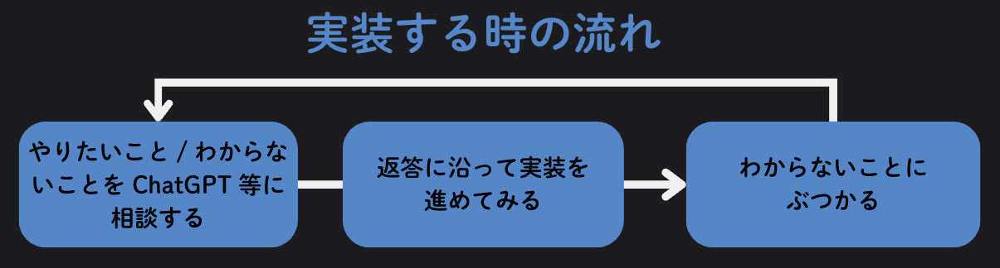
- 各 Step の「🤖 Gemini にこう聞く」カードにあるプロンプトをコピーして、Gemini に貼ります。
- 返ってきたコードを Apps Script エディタへ貼って動かします。
- うまく動かないときは、エラー文をそのままコピーして Gemini に「このエラーの原因と直し方を教えて」と聞きます。
- どうしても進めないときは、各 Step の折りたたみを開けば答えのコードを確認できます。
Step 1: Google Apps Script を動かしてみよう
まずは「GAS なるもの」を実際に動かして、スプレッドシートに文字が自動で入る感覚をつかみましょう。難しいことは考えず、まずは Gemini にコードを書いてもらって動かすのがコツです。
1-1. スプレッドシートを作成する
https://docs.google.com/spreadsheets/u/0/ にアクセスし、Google スプレッドシートで新しいシートを作成します。ここでは分かりやすいように、シートの名前を「GASハンズオン」などにしておきましょう。
1-2. スプレッドシート ID とシート名を控える
GAS からスプレッドシートを操作するために、スプレッドシート ID と シート名の 2 つを控えます。スプレッドシート ID は、アドレスバーの URL の中にあります。
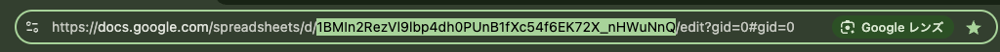
📋 控える 2 つの情報
- スプレッドシート ID → URL の
/spreadsheets/d/と/editの間の文字列
例:https://docs.google.com/spreadsheets/d/1BMln2RezVl9lbp4dh0PUnB1f.../edit#gid=0 - シート名 → 画面下のタブ名（
シート1またはSheet1）
1-3. Apps Script エディタを開く
スプレッドシートのメニューバーから 拡張機能 > Apps Script を開きます。
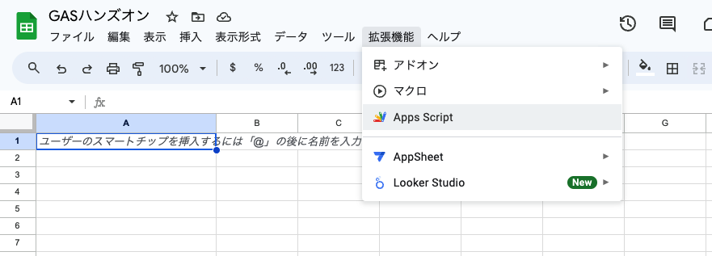
新しいタブで Apps Script のエディタ画面が開きます。最初は myFunction という空の関数が用意されています。
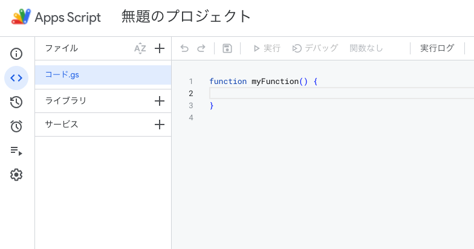
1-4. まずは Gemini にコードを書いてもらう
「セル A1 に Hello World! と書き込む」だけのシンプルなコードを作ります。下のプロンプトをコピーして Gemini に貼り、返ってきたコードをエディタの内容をすべて消してから貼り付けてください。
YOUR_SPREADSHEET_ID と YOUR_SHEET_NAME の部分を、ご自身の値に書き換えてください。
💡 うまくいかないとき / 答え合わせ用のコードを見る
function myFunction() {
// スプレッドシートの ID とシート名
const spreadsheetId = 'YOUR_SPREADSHEET_ID'; // スプレッドシートの ID に置き換える
const sheetName = 'YOUR_SHEET_NAME'; // シート名に置き換える
// スプレッドシートを開く
const ss = SpreadsheetApp.openById(spreadsheetId);
const sheet = ss.getSheetByName(sheetName);
// セル(A1)に "Hello World!" と挿入する
sheet.getRange("A1").setValue("Hello World!");
}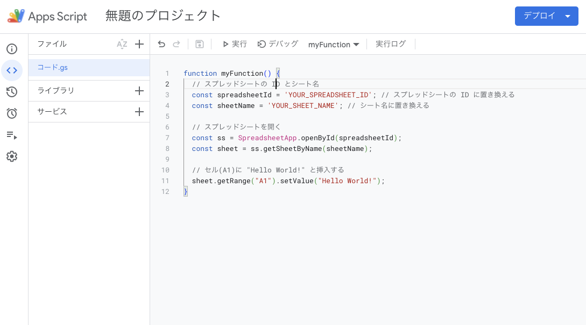
1-5. 保存して実行する
コードを保存（💾 アイコン）したうえで、画面上部の 「▶️ 実行」を押してコードを実行します。初回実行時は権限の承認が必要になります。
① 「承認が必要です」と表示されるので 「権限を確認」をクリックします。
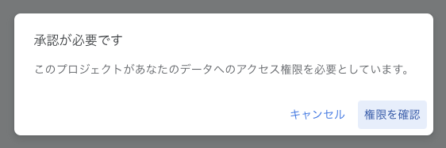
② 「このアプリは Google で確認されていません」という警告が出ます。「詳細」をクリックし、「（プロジェクト名）（安全ではないページ）に移動」を選択します。
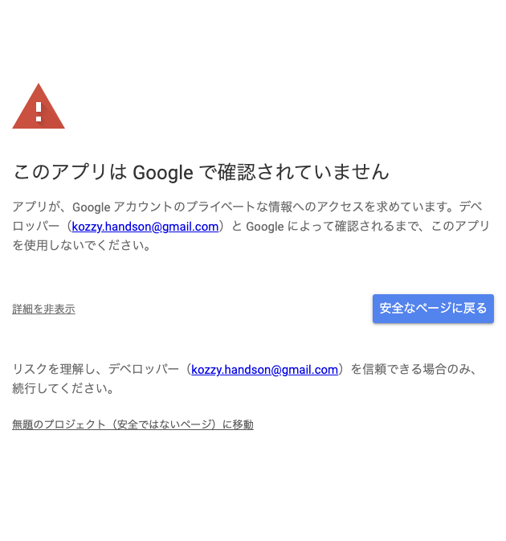
③ 最後にアクセスの許可画面が出ます。「許可」をクリックすれば承認完了です。
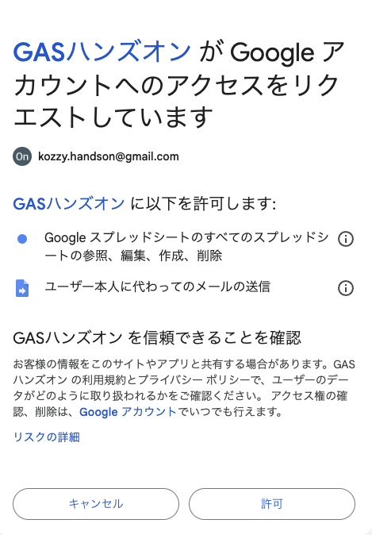
1-6. 結果を確認する
実行が成功すると、スプレッドシートの A1 セルに「Hello World!」が自動的に挿入されているはずです 🎉
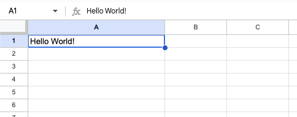
https://youtu.be/1mAB227eClM
Step 2: Gmail 送信テスト
メールを送る部分が正しく動くか確認するために、テストメールを 1 通送ってみましょう。
2-1. テスト用のコードを追加する
スプレッドシートのメニューから 拡張機能 > Apps Script を再度開きます。
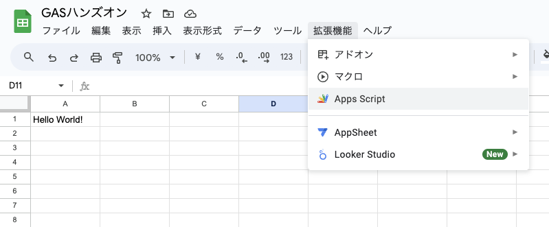
既存の myFunction はそのまま残して、その下に新しく sendEMail 関数を追加します。下のプロンプトを Gemini に貼り、返ってきた sendEMail 関数をエディタへ書き足してください。
recipientEmail をご自身のメールアドレスに置き換えるのを忘れずに！（テストなので自分あてに送って構いません）なお送信元は、いまログインしている自分のアカウントに決まります。コードから差し替えることはできません。
💡 うまくいかないとき / 答え合わせ用のコードを見る
function myFunction() {
// スプレッドシートの ID とシート名
const spreadsheetId = 'YOUR_SPREADSHEET_ID';
const sheetName = 'YOUR_SHEET_NAME';
// スプレッドシートを開く
const ss = SpreadsheetApp.openById(spreadsheetId);
const sheet = ss.getSheetByName(sheetName);
// セル(A1)に "Hello World!" と挿入する
sheet.getRange("A1").setValue("Hello World!");
}
// ここから追加
function sendEMail() {
// 宛先のメールアドレス（送信元は自分のアカウントに決まる）
const recipientEmail = 'your.email@example.com'; // 自分のアドレスに置き換える
// メール本文
const subject = 'テストメール';
const body = 'これはテストメールです。';
// メール送信
MailApp.sendEmail({
to: recipientEmail,
subject: subject,
htmlBody: body
});
}
// ここまで追加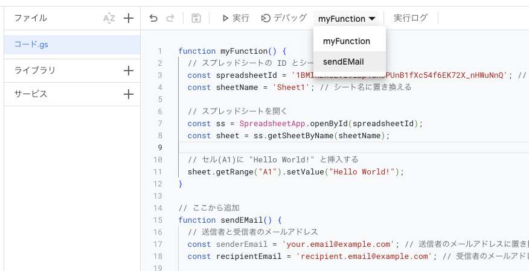
2-2. sendEMail を実行する
コードを保存したら、画面上部の関数選択ドロップダウンで「sendEMail」を選択してから 「▶️ 実行」を押します。
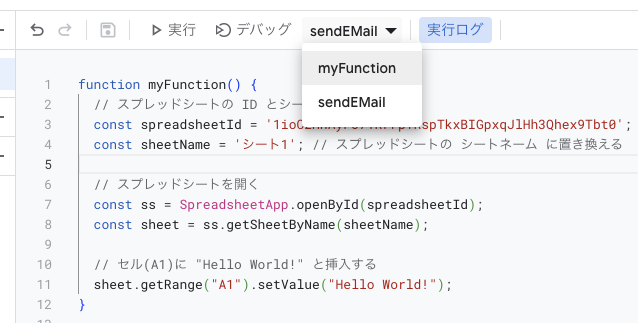
初回はまた権限の承認を求められます。Step 1 と同じ手順で承認していきましょう。
権限を確認
「承認が必要です」→「権限を確認」をクリック
アカウントを選ぶ
利用する Google アカウントを選択
詳細 → 移動
「詳細」→「（安全ではないページ）に移動」
アクセスを許可
「許可」をクリックして承認完了
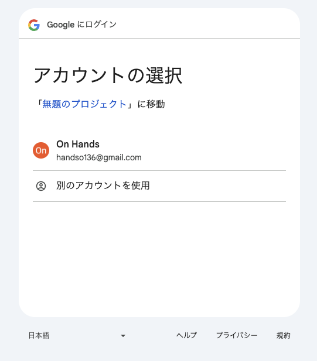
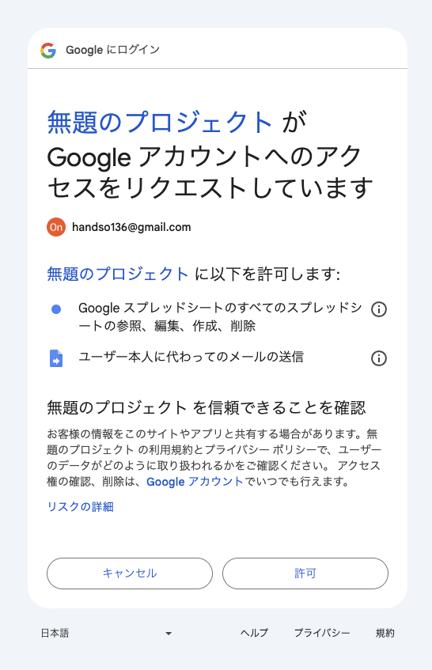
2-3. メール受信を確認する
指定したメールアドレスに、件名「テストメール」のメールが届いていれば設定は完了です 🎉
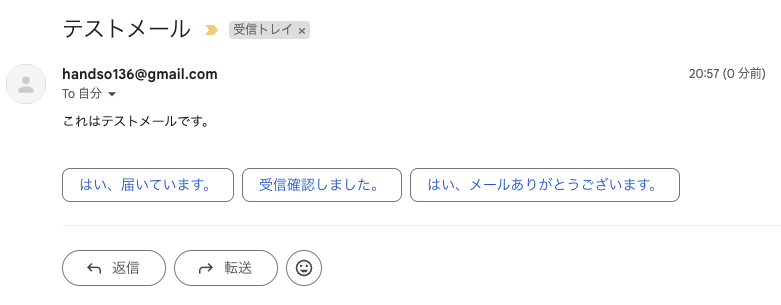
https://youtu.be/ZI6RCDsOk4o
Step 3: タスク通知スクリプトの作成
いよいよ本題です。スプレッドシートから今日のタスクを読み取り、メールで通知する処理を、4 つのステップに分けて少しずつ組み立てていきます。今回は myFunction を書き換えていきます。
3-1. スプレッドシートからデータを読み込む
まずは A1 に文字を書き込む処理をやめて、スプレッドシートの全データを読み込む処理に書き換えます。ここから先はいまエディタにあるコードを全文コピーして Gemini に貼り、そのあとにプロンプトを続ける形で進めます。
💡 うまくいかないとき / 答え合わせ用のコードを見る
function myFunction() {
const spreadsheetId = 'YOUR_SPREADSHEET_ID';
const sheetName = 'YOUR_SHEET_NAME';
const ss = SpreadsheetApp.openById(spreadsheetId);
const sheet = ss.getSheetByName(sheetName);
sheet.getRange("A1").setValue("Hello World!"); // この行を削除
}function myFunction() {
const spreadsheetId = 'YOUR_SPREADSHEET_ID';
const sheetName = 'YOUR_SHEET_NAME';
const ss = SpreadsheetApp.openById(spreadsheetId);
const sheet = ss.getSheetByName(sheetName);
// データを取得（シートの全行を二次元配列で受け取る）
const data = sheet.getDataRange().getValues();
}3-2. 今日の日付を取得する
次に、今日の日付を「yyyy/MM/dd」形式の文字列で取得する処理を足します。日付どうしを比べるために、文字列に揃えておくのがポイントです。
💡 うまくいかないとき / 答え合わせ用のコードを見る
function myFunction() {
const spreadsheetId = 'YOUR_SPREADSHEET_ID';
const sheetName = 'YOUR_SHEET_NAME';
const ss = SpreadsheetApp.openById(spreadsheetId);
const sheet = ss.getSheetByName(sheetName);
// データを取得
const data = sheet.getDataRange().getValues();
// ここから追加
// 今日の日付を取得（JST・yyyy/MM/dd 形式の文字列にする）
const today = new Date();
const formattedToday = Utilities.formatDate(today, 'JST', 'yyyy/MM/dd');
// ここまで追加
}3-3. 今日実施予定のタスクを抽出する
読み込んだデータから、実施日が今日のタスクだけを抜き出します。1 行目はヘッダー（見出し）なので shift() で取り除いてから、filter() で絞り込みます。
💡 うまくいかないとき / 答え合わせ用のコードを見る
function myFunction() {
const spreadsheetId = 'YOUR_SPREADSHEET_ID';
const sheetName = 'YOUR_SHEET_NAME';
const ss = SpreadsheetApp.openById(spreadsheetId);
const sheet = ss.getSheetByName(sheetName);
const data = sheet.getDataRange().getValues();
const today = new Date();
const formattedToday = Utilities.formatDate(today, 'JST', 'yyyy/MM/dd');
// ここから追加
// ヘッダー行（1行目の見出し）をスキップ
data.shift();
// 今日実施予定のタスクを抽出（2列目 row[1] が実施日）
const tasksToday = data.filter(row =>
Utilities.formatDate(row[1], 'JST', 'yyyy/MM/dd') === formattedToday
);
// ここまで追加
}row[0] が「タスク名」（A 列）、row[1] が「実施日」（B 列）です。配列の番号は 0 から始まることに注意しましょう。
3-4. Gmail 送信処理を実装する
最後に、抽出したタスクごとに通知メールを送信する処理を追加します。
recipientEmail をご自身のメールアドレスに置き換えるのを忘れずに！
💡 うまくいかないとき / 答え合わせ用のコードを見る
function myFunction() {
const spreadsheetId = 'YOUR_SPREADSHEET_ID';
const sheetName = 'YOUR_SHEET_NAME';
const ss = SpreadsheetApp.openById(spreadsheetId);
const sheet = ss.getSheetByName(sheetName);
const data = sheet.getDataRange().getValues();
const today = new Date();
const formattedToday = Utilities.formatDate(today, 'JST', 'yyyy/MM/dd');
data.shift();
const tasksToday = data.filter(row =>
Utilities.formatDate(row[1], 'JST', 'yyyy/MM/dd') === formattedToday
);
// ここから追加
// Gmail 通知を送信（今日のタスクごとに1通ずつ送る）
tasksToday.forEach(task => {
const taskName = task[0];
const recipientEmail = 'your.email@example.com'; // 自分のメールアドレスに置き換える
const subject = `本日のタスク: ${taskName}`;
const body = `本日のタスク: ${taskName}`;
MailApp.sendEmail({
to: recipientEmail,
subject: subject,
htmlBody: body
});
});
// ここまで追加
}3-5. タスク管理スプレッドシートにタスクを入力
スプレッドシートに以下の情報を入力します。1 行目はヘッダーとして「タスク名」「実施日」と入れ、2 行目以降に実際のタスクを書きます。
- A 列: タスク名 … 実施するタスクの名前（例: テストタスクA）
- B 列: 実施日 … タスクを実施する日付（yyyy/MM/dd 形式。例: 2026/10/14 ※スプレッドシート側で勝手に日付形式に変換される分には問題ありません）
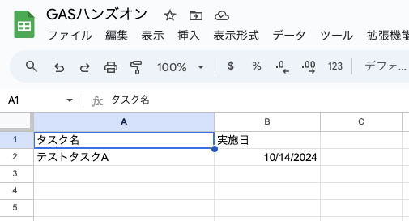
3-6. スクリプトを実行する
関数選択を 「myFunction」に戻して 「▶️ 実行」を押します。うまくいけば、こんなメールが届いているはずです 🎉
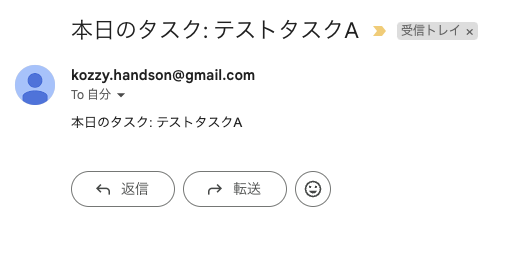
次の Step 4 では、この myFunction() を毎日決まった時間に自動実行させる設定を行います。
3-7. トラブルシューティング
もし Gmail 通知が送信されない場合は、以下の点をチェックしてください。
- スプレッドシートの ID とシート名が正しく設定されているか
- 受信者メールアドレスが正しく置き換えられているか
- スクリプトにエラーがないか
エラーが発生している場合は、Apps Script エディタ下部の「実行ログ」に内容が出力されます。
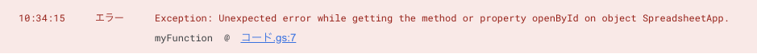
https://youtu.be/17ci6yQjaBg
Step 4: GAS トリガーで自動化する
最後に、作った myFunction() を毎日決まった時間に自動実行させましょう。これを実現するのが GAS トリガーです。
4-1. GAS トリガーとは
GAS トリガーとは、スクリプトを自動的に実行するための仕組みです。「特定のイベントが起きたとき」や「指定した時間になったとき」にスクリプトを実行できます。今回は毎日決まった時間に通知を送るため、「時間主導型」トリガーを使います。
4-2. 時間主導型トリガーを設定する
① Apps Script エディタの左側メニューから 「トリガー」（時計のアイコン）を選択します。
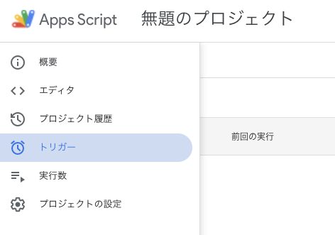
② トリガー一覧が開きます。最初は何もないので、右下の 「+ トリガーを追加」をクリックします。
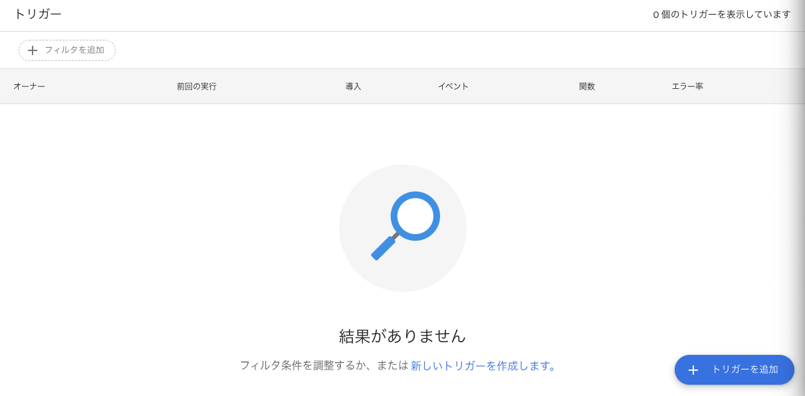
③ トリガーの設定画面で、以下のように設定して 「保存」します。
| 項目 | 設定値 |
|---|---|
| 実行する関数を選択 | myFunction |
| 実行するデプロイを選択 | Head（既定のまま） |
| イベントのソースを選択 | 時間主導型 |
| 時間ベースのトリガーのタイプ | 特定の日時（例: 2026-10-14 20:30） |
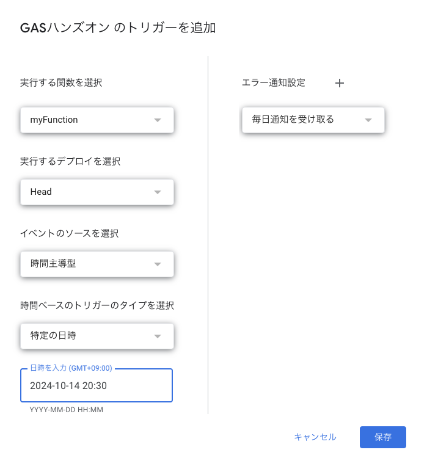
4-3. 指定時刻に通知が届くことを確認
設定した時刻になると myFunction() が自動実行され、Gmail にタスク通知が届きます。Gmail を確認し、正しく送信されていれば完成です 🎉🎉
https://youtu.be/MgiqigZFCS0
基本のタスク通知アプリが完成しました。発展編では、生成 AI を相棒にして「複数タスクを1通にまとめる」「優先度をつける」「Google カレンダーや Gemini API と連携する」といった、オリジナルの機能を追加していきます。
発展編へ進む →📺 さらに深掘り
GAS の世界をさらに広げるための参考リンク集です。手を動かして慣れてきたら、ぜひ覗いてみてください。
🎬 本ハンズオンの解説動画（Step 別）
動画のタイトルは「◯章」表記になっています。このページの Step 番号との対応は次のとおりです。
- Step 1（GAS を動かす）＝動画「2章」: https://youtu.be/1mAB227eClM
- Step 2（Gmail 送信テスト）＝動画「3章」: https://youtu.be/ZI6RCDsOk4o
- Step 3（タスク通知の実装）＝動画「4章」: https://youtu.be/17ci6yQjaBg
- Step 4（トリガー設定）＝動画「5章」: https://youtu.be/MgiqigZFCS0
📚 公式リファレンス
- Google Apps Script 公式ドキュメント: https://developers.google.com/apps-script
- SpreadsheetApp リファレンス: https://developers.google.com/apps-script/reference/spreadsheet
- MailApp リファレンス: https://developers.google.com/apps-script/reference/mail
おわりに
本日はご参加いただきありがとうございました！
GAS を使えば、Google スプレッドシートや Gmail を「自分のためのアプリ」に変えられます。今回のタスク通知アプリを足がかりに、ぜひ発展編で生成 AI を相棒にしたオリジナル機能づくりに挑戦してみてください。